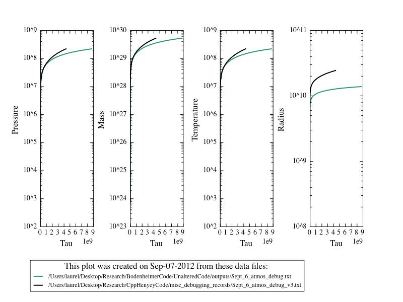

Date & Time: Sept. 7, 2012
Location: campus
Computing context: MachoMac
(/Desktop/Research/CppHenyeyCode/src, /Desktop/Research/BodenheimerCode/UnalteredCode)
From last time:
Getting very different kappa values in the atmos calculations.
So, check my kappa lookup table process in Helena, to make sure nothing's going off the rails, there...
The problems (with the starting pressure values, at least) are happening because my eos tables don't extend down to low enough pressures. (See Figure 2 for atmospheric temperature and pressure profile comparisons between the two codes.) Need to fix that. Done.
Now that the issue with the eos lookup tables' ranges has been addressed, let's see how the atmospheric values calculated by the two codes compare. (See Figure 1.) The mass, pressure, and temperature values now seem to agree much better at the bottom of the atmosphere, though the inner radius values differ by a factor of ~2. Also, Helena goes in to a tau depth ~2x larger than Peter's code does.
Not sure why this is-- it might be due to the dM restrictions in Helena. What happens if I change that from 0.9dM to 0.5dM? Will that fix this discrepancy in the tau depth? Answer: no.
Also, how important is this tau factor of two in the CDEG results?

Comparison of the atmospheric results for a 1 Msun,
n=3/2, no fusion initial condition model in both Peter and Helena
codes, after I fixed the range problem with Helena's lookup tables.
For comparison, the if you plot the results from Figure 2 on the
same scale, Helena's tau values would be so small that the green
curves aren't even visible on the plots.
Figure
1:
Now that I've fixed(?) the atmos calculations issue, check whether this fixes the dX profiles from Helena
It doesn't. They look the same (and as wrong) as always.
Next step: check/compare the G profiles again.
Done. As before, they agree quite well between the two codes...
Maybe also check the indexing on the CDE calculations.
Try running this all with the CDEG_flip subroutine, instead? Tried it. Instead of giving Helena dX values << dX Peter values, it gave Helena dX values >> Peter dX values.
Start next time by getting and plotting the CDE profiles from each code, and comparing the two. What/where is the difference between the values calculated by these two codes that's causing them to find such different dX values?????
To Do Today:
Start by getting and plotting the CDE profiles from each code, and comparing the two. What/where is the difference between the values calculated by these two codes that's causing them to find such different dX values?????
The CDE profiles don't differ until you hit the outermost mass cell. (Note: I had to tweak some signs in the NewCalcCDEG.cpp subroutine to get the CDE signs to more-or-less agree b/w the two codes. The outermost mass cell values remain hard to get right, as usual.)
However, the A matrix values start differing between the codes before that point. So, need to figure out why that's happening.
The A1 profiles match exactly
The A2 and A4 profiles match well, except at the outermost mass cell
The A3 profiles start diverging from each other around mass cell #135.
Can I get the A profiles to match if I swap in Peter's C/D/E matrix values into Helena? Answer: no.
Swapping in the C values makes no difference
Swapping in the D values makes a difference, though it's hard to say if on balance it improves or worsens the agreement
Swapping in the E values introduces weird peaks in all of Helena's A profiles around mass cell #230.
Swapping in the G values makes absolutely no difference
Can I get the A profiles to match if I swap Peter's InverseS matrix values into Helena?
Swapping in both the InverseS and Sum values: the A profiles have opposite signs, but otherwise seem to agree really well.
Swapping in the Sum, but NOT the InverseS values: the A profile magnitudes are mismatched in places, and they have opposite signs.
What if I swap in -1.0 * Sum, but not InverseS? This leads to pretty good overall agreement b/w the two codes' A profiles. The signs are right, overall. There's some difference at the outermost mass cells, but the A3 profile is starting to match better. (See Figure 2).
Comparison of the A3 profiles. The Helena profile is
calculated with -1.0*Sum swapped in from Peter's code, but with
InverseS generated within Helena itself, using the 4x4 matrix
Cramer's Rule inversion algorithm.
Figure
2:
What if I also set the outermost C (and DE?) matrix values to Peter's values, and repeat? Will that fix the A profiles' discrepancies at the outermost mass cell?
Swapping in the outermost C values alone doesn't fix it.
Swapping the outermost values of CDEG all at once doesn't fix it, either. (How is that possible????!!!!!!) <--- Continue looking into this when you resume next time.
Swapping in the InverseS, but NOT the Sum values: all of the A profiles agree perfectly (including their overall signs)
Do the dX profiles agree b/w codes in this case? Yes, they do. See Figure 3 for proof!
The dX profiles from Helena perfectly match Peter's
when I swap in his InverseS (but NOT Sum) values into Helena.
Figure
3:
Meeting with Greg
Update wordpress blog
Back up fortran and cpp codes to BitBucket
To keep in mind for later:
For the 1 Mjup model: do the Peter and Helena models' dX values (raw) now agree, too?